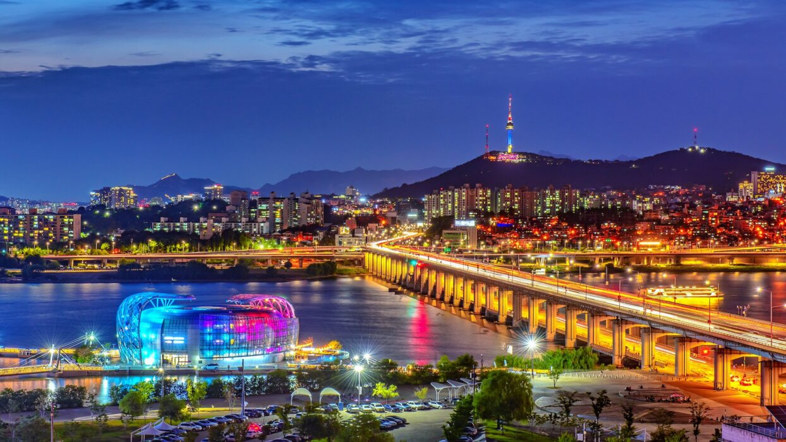

Seoul
The capital of South Korea, known as the center of politics, economy, and culture.
Busan
The second largest city, famous for beaches and the Busan International Film Festival.

Jeju
A volcanic island and popular tourist destination with beautiful natural scenery.
Gyeongju
An ancient city rich in history and cultural heritage from the Silla Kingdom.

Incheon
A major port city near Seoul and home to Incheon International Airport.